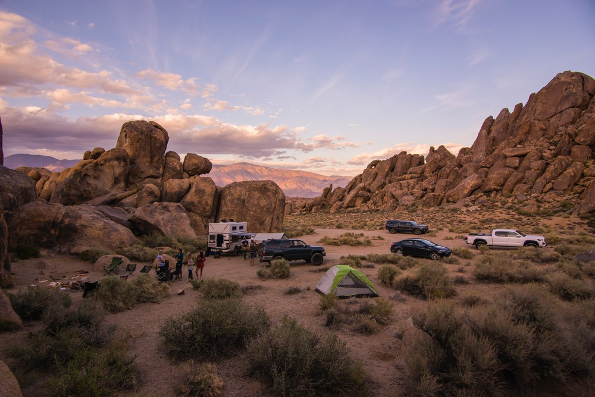
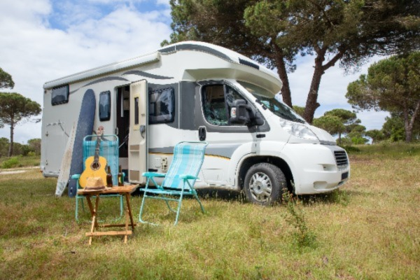
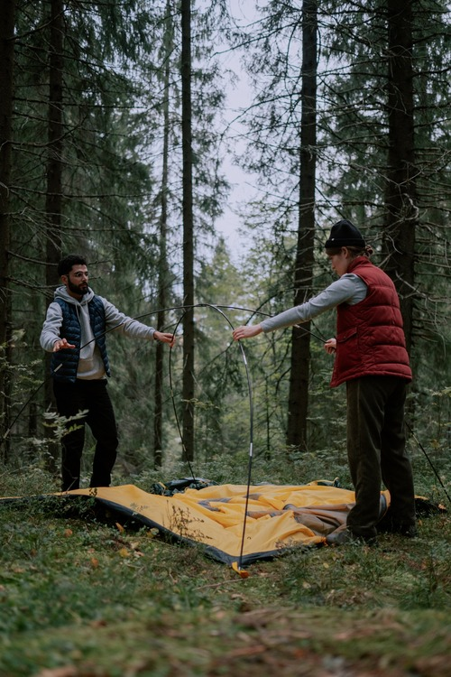
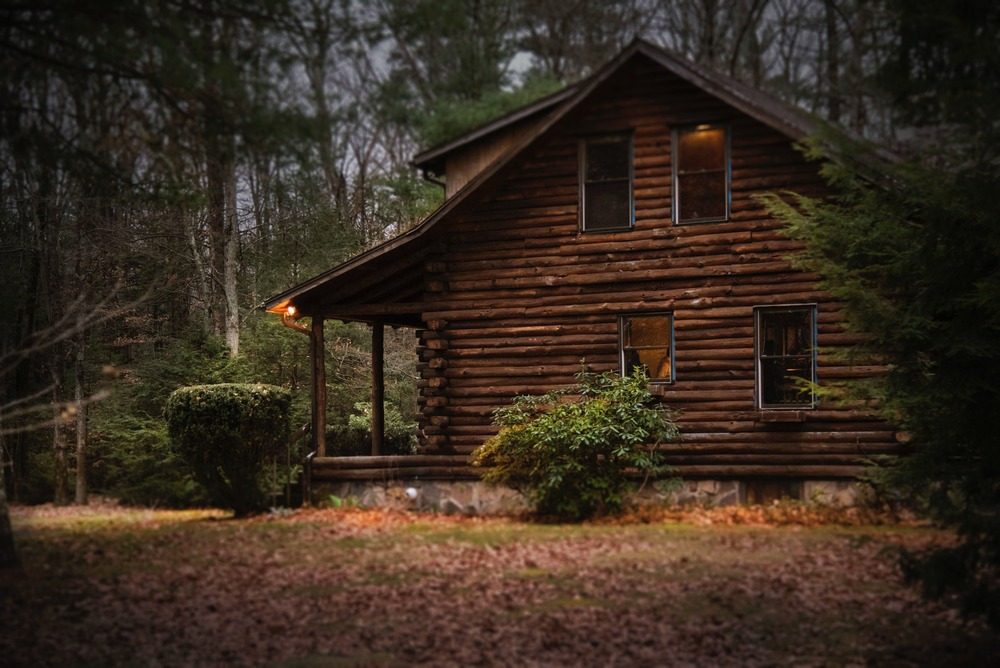
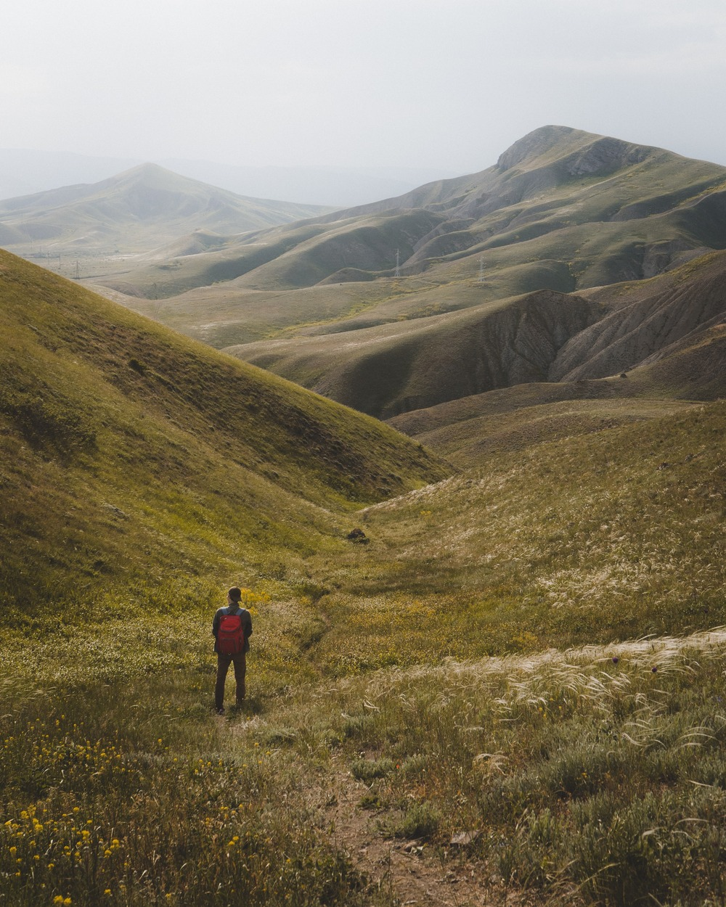
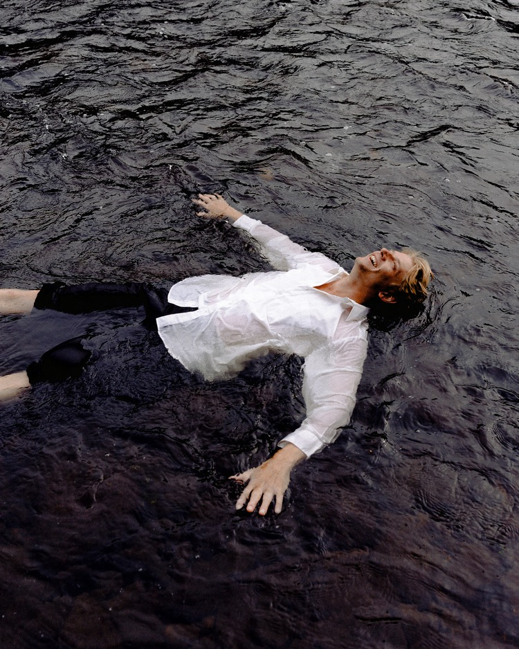
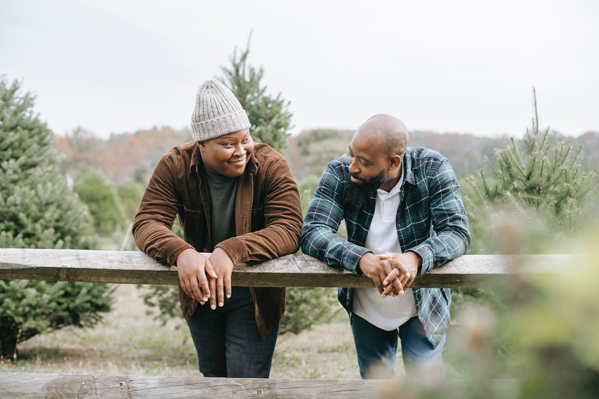

Welcome to a website all about camping, a way to escape the urban stress and reconnect with nature!
Want to keep up with the latest camping news?

Camping is an outdoor recreational activity of spending a certain amount of time (often a few days) living in a camp, tent or a camper.
- Most campers will camp out in tents, these are contraptions made from different materials, such as fiberglass and parachute fabric, to create temporary shelter
- Campers may also choose lodges or cabins, which are sturdier shelters with more amneties than simple tents
- Travelling campers may choose to travel with their shelter! These are in the form of RVs(recreational vehicles) that offer portable shelter and convenience that a camper operates as a vehicle
Winter Camping is one of the most favourite camping experiences for campers. This owes to the fact that during the winter, there are much less insects and there is something quite cozy about being bundled up next to a fire while sipping on a hot drink.

Spring, Summer and Fall are all game for camping. You may want to try different kind of camping in each whether though. Such as in the summer, due to abundance of different insects, hammock camping with nets would be quite preferable. This keeps you off the ground and away from potential night visitors and also from being swarmed by flying insects.
| Weather | Months |
|---|---|
| Spring | March |
| April | |
| May | |
| Summer | June |
| July | |
| August | |
| Fall | September |
| October | |
| November | Winter | December |
| January | |
| February |
Local national and state parks:
Local national and state parks in the USA are wonderful places to camp. They provide various types of campgrounds, from fully developed to primitive. The best part is you do not need to carry your things far and can bring extra stuff in your car. They usually have restrooms with running water. There is usually a fee to book the campsite.
Dispersed Camping:
allows you to camp on public land where it is allowed for free. This type of camping is more primitive and can prove dangerous for beginners. Adequate knowledge of public lands and its rules are must as well as survival knowledge and the proper tools.
RV Camping:
RV Camping is the use of a van/bus like vehicle to travel the roads and set camps in designated areas. They not only allow campers to visit far off places but campers can also visit more places. Most modern RVs are state of the art and afford campers many luxuries that include a bathroom, kitchen, full bed and more. You can go anywhere your wheels can take you!
Tents or Hammocks
The most common way for people to get out in nature and camp is to take tents (or hammocks) with them. Most tents come with a parachute fabric waterproof material and fiberglass rods. This means that the tents are very light and can be carried over distances while hiking. Most tents set up within minutes. Also, different tents have different capacities, ranging from solo tents to tents that host over 8 people. Hammocks for camping are also an option, although not as common.
Rent a cabin with friends
If being out in the wild with nothing but a few rods and a thin fabric as your only shelter from nature is not your cup of tea, you might want to consider renting a cabin. Cabins are shelters usually made from wood that provide excellent shelter while out in the wild. Depending on the type of cabin, they may even host more amneties, like electricity, fireplace, or even WiFi. Costs for renting cabins are usually split between friends who rent it together, making it more affordable.
Invest in an RV
If your goal is to travel to camp while travelling, RVs prove an excellent camping solution. RVs are like a tiny home on wheels, with some being equipped with a kitchen, bathroom, and even shower. An RV enables campers to a whole new realm of possibilities. One may travel far and wide and not worry about spending on hotels, motels, expensive meals at restaurants, or (ofcourse) transportation. However, one must be well prepared for their adventures in an RV, as at any point they could become their own mechanic, plumber or electrician.
Reconnect with nature
3648We are part on the nature that makes up our environment. Urbanization has led to a divide between us and nature, which has led to many people never having spent a night out in nature. Granted that camping may not be an attractive activity for some people, spending time in nature can feel good and therapuetic. We get to feel what our ancient ancestors may have felt out in nature.
Explore your own capabilities
The path to learning new things can be frustrating and uncomfortable. Learning how to set up a tent, cook a meal on an open fire, withstand the elements of nature, can cause discomfort, however, can lead you to learning more about yourself. You can acheive things that you thought you could never do. Camping gives you a lot of time to do self reflection and exploring your capabilities.
Get to spend time with your loved ones
Busy and stressful life schedules lead us to sometimes not spending enough time with our loved ones. When you are out camping, you are away from the daily life and have a lot of time from sunrise to sunset to unwind and do what you like. If you go camping with you loved ones, you can spend a lot of quality time with them.